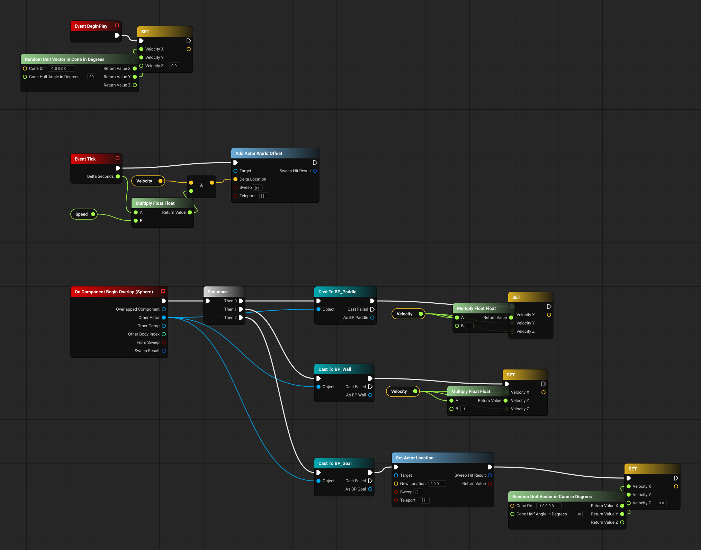
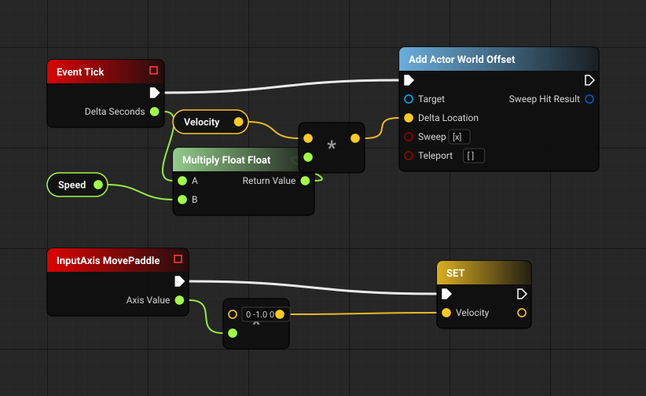

Start with the hello world, a Pong ball and paddle in 32 nodes, then a whole game, an asteroid shooter: both playing on their converted code, every node lighting up as it runs. Then the real thing: a Blueprint someone pasted online, badly written the way most are, turned into code, traced node by node to the use case and requirement it serves, and drawn as a 3D city. Each friction named in the design discussion The Blueprint Paradox is measured on it.
Three ideas, each shown below: closed loop requirements (sheets 4 and 5), human ergonomics (sheets 2 and 3) and observational understanding (sheet 0's replays here, values and valves on the battles of a game in production).
Two pastes from blueprintue.com, Pong - BP_Ball (23 nodes) and Pong - BP_Paddle (9 nodes), UE 4.18, by anonymous: a ball that is served in a random direction, moves every frame, turns off a paddle (its X) and off a wall (its Y), and is served again from a goal; and a paddle the player moves with one axis. Converted to 13 statements in 5 graphs, traced to 6 use cases and 10 requirements: every node, every path (12 of 12) and every question (8 of 8) accounted for; 13 of 13 effects hold on the code and 13 plants flip.
The loop: LOOP OPEN: every hole of ours is closed; 6 owner hole(s), from 3 question(s) only the owner can answer, keep it open
//@graph 1:1 BP_Ball.ReceiveTick
{
K2_AddActorWorldOffset(Velocity * KismetMathLibrary.Multiply_FloatFloat(DeltaSeconds, Speed), true, false, out _);
}
//@graph 10:1 BP_Ball.ReceiveBeginPlay
{
var RandomUnitVectorInConeInDegrees_result_2 = KismetMathLibrary.RandomUnitVectorInConeInDegrees(new Vector { X = -1, Y = 0, Z = 0 }, 30);
Velocity = new Vector { X = RandomUnitVectorInConeInDegrees_result_2.X, Y = RandomUnitVectorInConeInDegrees_result_2.Y, Z = 0 };
}
//@graph 82:1 BP_Ball.BndEvt__Sphere_K2Node_ComponentBoundEvent_0_ComponentBeginOverlapSignature__DelegateSignature
{
if (OtherActor is BP_Paddle AsBP_Paddle_1) {
Velocity = new Vector { X = KismetMathLibrary.Multiply_FloatFloat(Velocity.X, -1), Y = Velocity.Y, Z = Velocity.Z };
}
if (OtherActor is BP_Wall AsBP_Wall_3) {
Velocity = new Vector { X = Velocity.X, Y = KismetMathLibrary.Multiply_FloatFloat(Velocity.Y, -1), Z = Velocity.Z };
}
if (OtherActor is BP_Goal AsBP_Goal_5) {
K2_SetActorLocation(new Vector { X = 0, Y = 0, Z = 0 }, false, false, out _);
var RandomUnitVectorInConeInDegrees_result_8 = KismetMathLibrary.RandomUnitVectorInConeInDegrees(new Vector { X = -1, Y = 0, Z = 0 }, 30);
Velocity = new Vector { X = RandomUnitVectorInConeInDegrees_result_8.X, Y = RandomUnitVectorInConeInDegrees_result_8.Y, Z = 0 };
}
}
//@graph 1:1 BP_Paddle.ReceiveTick
{
K2_AddActorWorldOffset(Velocity * KismetMathLibrary.Multiply_FloatFloat(DeltaSeconds, Speed), true, false, out _);
}
//@graph 11:1 BP_Paddle.K2Node_InputAxisEvent_0
{
Velocity = new Vector { X = 0, Y = -1, Z = 0 } * AxisValue;
}
Only the author can answer
IR-PG-1 A ball that reaches a goal scores a point for the player at the other end, and the score is shownIR-PG-2 The ball's Speed and the paddle's Speed are each set before play, to values the author namesIR-PG-3 Which end a serve goes toward, and how wide it may spread, are named design values; today every serve, the first and each after a goal, goes within 30 degrees of -X, toward the same endWhat the hello world found in the converter, each fixed, with the class of the fault, and held by a test: a split struct pin read as its default (the serve printed Velocity = (0, 0, 0) where Random Unit Vector was wired); pin ids that repeat across a duplicated node (the paddle was made from the ball), so a pin is found by its node too; two Blueprints' members of one name merged (the paddle's Velocity counted as the ball's); and two names it could not read, the paddle's owner and its axis event's title.
As the Blueprint editor draws them, the reference: each node where its author put it, titles in the engine's own formats, the editor's colours. The box sizes and the grid are this page's.


The same two pastes as a city: point at anything to name it, click it for what it is, and Unreal 2D shows the selected graph's paste as above. Open it full screen.
siljaZ's asteroid shooter (UE 5.0), posted to blueprintue.com a graph at a time: 16 of its pastes, 232 nodes. The ship circles the middle of the screen on one axis and fires into it; asteroids and enemy ships fly out of the middle at it; a hit costs a life and the last one sends the game back to its title. Converted to 83 statements in 20 graphs and traced to 12 use cases: 24 requirements READ from the nodes, every node, every path (53 covered, 11 excluded with the reason) and every question (34 of 34) accounted for; 65 of 65 effects hold on the code and 65 plants flip.
The loop: LOOP OPEN: every hole of ours is closed; 30 owner hole(s), from 15 question(s) only the owner can answer, keep it open. Never ran: ReduceLives#s4; ReceiveTick(BP_Meteor)#s1 - the literal-false side of ReduceLives's DoOnce (the test is the literal false: the DoOnce's Start Closed pin is left at its default (false) in the paste, so its then side never runs (StandardMacros.t3d:340)) and BP_Meteor's Tick, which BP_Asteorid's supersedes.
It opens playing: the game on the left is the converted code running, and every node it runs glows in the city on the right. Press a key to take over (A / D turn, Space fires); left alone, the computer plays. Open it full screen. The 13 values the pastes do not carry - sizes, speeds, the waves - are this page's, and the game's panel lists each one as authored.
What a whole game took in the converter, each a fix to the class with its evidence: a graph's kind read from its own event nodes (an event stands only in an event graph, K2Node_Event.cpp:523), so a pasted BeginPlay is code; DoOnce's state kept on the object and DecrementInt given its code form (StandardMacros.t3d); the shot's Timeline as an island whose outputs the engine fires each frame; an owner declared in the manifest, with the reason, where a copy cannot say whose it is; and a class renamed between pastes found by its variables' GUIDs (BP_Meteor became BP_Asteorid: its AimVector and Speed keep their GUIDs).
Only the author can answer (15)
IR-AS-1 BP_Meteor and BP_Asteorid are one Blueprint, renamed: the asteroid takes its aim from BP_Meteor's ReceiveBeginPlay, and BP_Asteorid's Tick (which adds the growth) supersedes BP_Meteor'sIR-AS-2 Every speed is set before play, to values the author names: the asteroid's Speed (BP_Meteor's, the same variable), the enemy bullet's Speed and the ship's RotationSpeedIR-AS-3 How long a ship waits before it may fire (DelayUntilShooting), how fast a hit ship flashes (FlashInterval), and the 0.2 s before the flashing starts, are named design values set before playIR-AS-4 What each target is worth comes from one scoring table: a ship's HitEnemyShipScore is a variable set before play, while an asteroid's 100 is written into its graphIR-AS-5 Each enemy ship's path is a Spline built in its own Blueprint before playIR-AS-6 An enemy ship's speed is a named design value; today the variable Speed is overwritten with 100 every frame, so its default, and any change to it, has no effectIR-AS-7 How large things grow as they leave the middle (the game's perspective) is named design values: an asteroid 0.5 + min(d / 150, 1), a ship 0.1 + min(d / 200, 0.2)IR-AS-8 The asteroid timer runs from the spawner's ReceiveBeginPlay for as long as the spawner lives: nothing in the pastes pauses it, during the flashing or at any point of a gameIR-AS-9 Enemy ships come in waves: something starts a looping 0.5 s timer that runs CustomEvent_1, and something ends it, so that a wave holds a number of ships the author namesIR-AS-10 An asteroid is never destroyed: a shot that hits it scores 100 and is itself destroyed, and an asteroid that hits the ship costs a life and flies on throughIR-AS-11 The ship turns with its controller, and its sprite and muzzle (ProjectileSpawn) sit away from its middle, so that turning the control rotation carries them around a ringIR-AS-12 The player character is always a BP_Character and the player controller a BP_Controller (the game mode's defaults), so every cast to them succeeds; were one to fail an asteroid or a bullet would keep its default aim, the title would mark nothing and a lost life would hide no iconIR-AS-13 A shot's flight takes as long as its Timeline and follows its track NewTrack_0, and the component that moves (RenderComponent) is the one that collidesIR-AS-14 What the pastes name but do not hold is built as its name says: the score widget BP_Score (UpdateScore, the icons Life1-3), the explosion BP_Explosion, and the controller's DestroyUIIR-AS-15 The ship starts with Lives = 3: three icons to lose, and the fourth hit ends the gameDrag to orbit, scroll to zoom, W A S D to fly; point at anything to name it and click it for what it is, a node for its whole chain. Type ask what happens when the locked target dies, questions, fly to ConeCycle or play. Exec pipes run above the nodes and data pipes below. The two graphs a timer runs 100 times a second burn red, and a call made by a function's name marches in orange. Open it full screen. Microphone input works where the browser allows it, which this frame does not.
Lock-On System (121 nodes) · Distance To Frank (12 nodes) · Toggle Lock On (5 nodes) · New Control Rotation (24 nodes). Measured in the author's own layout: 200 wires with 29 crossings, 17 of them an exec wire over a data wire. There are no comments. Two timers call functions by a name in a string (DistanceToFrank, ToggleLockOn) every 0.01 s. The paste names no parent class.
The converter read all 162 nodes, as the engine reads them: object paths, event names, the macros, and a pin that defaults to self. It wrote 99 statements in 12 methods, and each one parses as C#. Then the methods were assembled into the classes they belong to. Each parent class was READ from what the Blueprint uses on itself: FrankBP : Character, with 11 typed fields, 11 methods and its two components, and MasterEnemy : Actor, the Blueprint DistanceToFrank's own paste names as its self. The event graph casts to Master_Enemy, an asset at another path, so the two are held apart as read: one Blueprint moved and renamed, or two, is the author's to say. The toolkit's own UML gate holds that class model to the code.
classDiagram
class LockOnInterface {
<<interface>>
+LockOnInterface()
}
class MasterEnemy {
+float DistanceToFrankVar
+bool CanBeTargeted
+DistanceToFrank()
}
Actor <|-- MasterEnemy
class FrankBP {
+bool LockedOn
+double ClosestTargetDistance
+Master_Enemy EnemyElement
+Master_Enemy LockedOnTarget
+double MaxDistance
+Rotator RotationInstance
+bool NoFalse
+List~Master_Enemy~ Out_Actors
+List~Master_Enemy~ ConeActors
+Rotator LockOnTargetRotator
+Vector TargetLocation
+LockON()
+BndEvt__BP_TopDownCharacter_Sphere_K2Node_ComponentBoundEvent_0_ComponentBeginOverlapSignature__DelegateSignature()
+BndEvt__BP_TopDownCharacter_Sphere_K2Node_ComponentBoundEvent_1_ComponentEndOverlapSignature__DelegateSignature()
+LockOnDone()
+SetLockOnTarget()
+EnemyDeath()
+BndEvt__FrankBP_LockOnCone_K2Node_ComponentBoundEvent_2_ComponentBeginOverlapSignature__DelegateSignature()
+BndEvt__FrankBP_LockOnCone_K2Node_ComponentBoundEvent_3_ComponentEndOverlapSignature__DelegateSignature()
+ConeCycle()
+NewControlRotation()
+ToggleLockOn()
}
Character <|-- FrankBP
FrankBP *-- PrimitiveComponent : LockOnSphere
FrankBP *-- PrimitiveComponent : LockOnCone
class Master_Enemy {
+float Distance_to_Frank_Var
+bool IsDead
}
FrankBP ..> LockOnInterface : messagesclassDiagram
class LockOnInterface {
<<interface>>
+float Distance_to_Frank_Var
+bool IsDead
+void LockOnInterface(Master_Enemy Locked_On_Target)
}
LockOnInterface <|.. Master_Enemy
class LockOnSystemComponent {
-LockedOn
-ClosestTargetDistance
-EnemyElement
-LockedOnTarget
-MaxDistance
-RotationInstance
-NoFalse
-Out_Actors
-ConeActors
-LockOnTargetRotator
-TargetLocation
+LockON()
+On_Component_Begin_Overlap_LockOnSphere_()
+On_Component_End_Overlap_LockOnSphere_()
+LockOnDone()
+SetLockOnTarget()
+EnemyDeath()
+On_Component_Begin_Overlap_LockOnCone_()
+On_Component_End_Overlap_LockOnCone_()
+ConeCycle()
+NewControlRotation()
+ToggleLockOn()
}
FrankBP *-- LockOnSystemComponent
Character <|-- FrankBP
LockOnSystemComponent --> LockOnInterface : asks, never castsLeft: as read. Right: the OO shape proposed for what the brainstorm found. It is a design, and nothing here rewrites the Blueprint.
The view's layout of the same graphs: 148 wires, 0 spanning six or more statements, 0 nodes moved between two layouts. Every figure below comes from tools/friction.py, none typed by hand.
JJ GameDesign's Enemy Blueprint for Antagonist Combat System (blueprintue.com, UE 5.3): the whole event graph of one enemy, 1,009 nodes in one paste. Why this one: it is classic spaghetti on every axis the Lock-On instruments take, with 6.2 times Lock-On's nodes, and each of its graphs sits in one of the author's 25 comment boxes, so the requirements have a second source. The same frictions, measured with the same instruments as Lock-On's above; each card says what the view answers and what it does not. Fly it in the city.
| Measured the same way | Lock-On | This enemy |
|---|---|---|
| nodes in the paste(s) | 162 in 4 pastes | 1009 in 1 paste |
| wires as drawn (exec, data) | 200 (82, 118) | 1090 (496, 594) |
| crossings as drawn (exec over data) | 29 (17) | 174 (108) |
| longest wire as drawn, units | 1509 | 4164 |
| largest canvas, units | 2736 x 2160 | 18880 x 12146 |
| the view's layout: wires, long wires, nodes moved, longest px | 148, 0, 0, 1011 | 851, 0, 0, 2740 |
| graphs, statements, nodes folded into the statement that reads them | 12, 99, 43 | 36, 629, 451 |
| decisions, outcomes, entry-to-exit paths | 30, 60, 54 | 119, 241, 270 |
| Cast To nodes | 4 | 3 |
| calls between graphs (by a name in a string) | 13 (5) | 55 (0) |
| member written by the most graphs | LockedOn, 4 | Health, 5 |
| brainstorm questions raised | 54 | 237 (CONST 8, DUP 6, ELSE 71, EVENTCALL 26, LITERAL 78, UNWRITTEN 7, WRITE 41) |
| graphs a timer runs at a rate the city burns red | 2 | 0 |
| deepest branch nesting (decisions inside decisions, from the graph files) | 6 (LockON#s20) | 5 (Toxic_Hit#s10) |
| exec wires drawn right to left in the author's layout | 1 of 82 | 27 of 496 |
| longest entry-to-exit path, statements | 13 (LockON#P4) | 35 (DisolveTimer#P1) |
Every piece of the Blueprint links to the use case step it realises, and the steps form a linear, hierarchical chain. Here is one node, as the city's details panel shows it.
K2Node_IfThenElse_12 reading LockedOnTarget.IsDead (LockOn_EventGraph.t3d:609)if (!LockedOnTarget.IsDead), statement LockON#s22The loop is closed by counts, as code coverage closes it, and the toolkit's existing gap checker gates them. All 162 nodes are mapped. Of 60 decision outcomes, 58 are cited and 2 are excluded because they cannot happen. Of 54 paths, 48 are covered and 6 excluded. All 54 brainstorm questions are answered.
The design rule: closed-loop requirements replace the code as what an AI acts on, so it works from the loop rather than from prompts, and no mistake gets through unless the requirements carry it too. The node was judged by one question: what mistake can still get past it? Thirteen criteria answer it, each named by the mistake it stops, and 6 of them could not be held at all before today. Three additions to the node made all 13 measurable. The effect says, in the code's own terms, what each requirement makes the code set, call, branch on or read, and where. The terms bind each word of the requirements to the code names it means. The lock records each requirement's fingerprint as last verified.
L1 IDENTITYa rebuild points an edge at another node, and a verdict follows the wrong thing0 / 0 / 00 / 0 / 0L2 SOURCEDa requirement nothing outside the model states, or a cell dropped with no reason0 / 0 / 00 / 0 / 0L3 CORROBORATEDa requirement only one family states inherits that family's mistakes (listed)0 / 0 / 110 / 0 / 11L4 CARRIEDa requirement no pathway an epic reaches realises: nobody builds it0 / 0 / 00 / 0 / 0L5 ENDEDa pathway with no end or no actor, a step carrying nothing: behaviour nobody specified0 / 0 / 00 / 0 / 0L6 ANSWEREDa question nobody answered, settled by a guess0 / 18 / 00 / 18 / 0L7 REALIZEDcode linked to the right requirement that does the wrong thingnot held: no field for it0 / 21 / 0L8 FALSIFIABLEa check that passes whatever the code doesnot held: no field for it0 / 0 / 0L9 JUSTIFIEDcode no requirement asked for: behaviour that slipped in0 / 0 / 00 / 0 / 0L10 DEFINEDa requirement naming what the code does not have, or a word read two waysnot held: no field for it0 / 4 / 4L11 CAUSALa step relying on a condition nothing makes truenot held: no field for it0 / 0 / 0L12 CONSISTENTtwo requirements demanding opposite effects: meeting one breaks the othernot held: no field for it0 / 0 / 0L13 CHANGE-SAFEa requirement, or the code it reads, changed after it was verifiednot held: no field for it0 / 0 / 0assert:IR-LO-1#1calls IsValid with LockedOnTarget at LockON#s21:then (no statement at LockON#s21:then calls IsValid (read 3))assert:IR-LO-1#2calls IsValid with LockedOnTarget at LockON#s31:then (no statement at LockON#s31:then calls IsValid (read 3))assert:IR-LO-3#1sets Out_Actors by Array_AddUnique at OnComponentBeginOverlap(LockOnSphere)#s1:then (no statement at OnComponentBeginOverlap(LockOnSphere)#s1:then sets Out_Actors (read 5))assert:IR-LO-3#2sets ConeActors by Array_AddUnique at OnComponentBeginOverlap(LockOnCone)#s1:then (no statement at OnComponentBeginOverlap(LockOnCone)#s1:then sets ConeActors (read 1))assert:IR-LO-5#1branches LockedOnTarget at EnemyDeath (no statement at EnemyDeath branches LockedOnTarget (read 2))assert:IR-LO-6#1calls GetDistanceTo at DistanceToFrank (no statement at DistanceToFrank calls GetDistanceTo (read 4))assert:IR-LO-7#1branches LineTraceSingleForObjects at DistanceToFrank (no statement at DistanceToFrank branches LineTraceSingleForObjects (read 4))assert:IR-LO-8#1calls LineTraceSingleForObjects with EDrawDebugTrace.None at DistanceToFrank#s1 (no statement at DistanceToFrank#s1 calls LineTraceSingleForObjects (read 1))assert:IR-LO-11#1calls K2_SetTimerDelegate at OnComponentBeginOverlap(LockOnSphere)#s1:then (no statement at OnComponentBeginOverlap(LockOnSphere)#s1:then calls K2_SetTimerDelegate (read 5))assert:IR-LO-14#1calls GetWorldDeltaSeconds at NewControlRotation#s1:then (no statement at NewControlRotation#s1:then calls GetWorldDeltaSeconds (read 7))assert:IR-LO-15#1calls LockOnInterface at OnComponentBeginOverlap(LockOnSphere)#s4:then (no statement at OnComponentBeginOverlap(LockOnSphere)#s4:then calls LockOnInterface (read 2))assert:IR-LO-15#2calls LockOnInterface at OnComponentEndOverlap(LockOnSphere)#s5:then (no statement at OnComponentEndOverlap(LockOnSphere)#s5:then calls LockOnInterface (read 2))assert:IR-LO-17#1sets Distance_to_Frank_Var at DistanceToFrank#s2 (no statement at DistanceToFrank#s2 sets Distance_to_Frank_Var (read 1))The loop's honest limit is the rule's own caveat, counted: 11 requirements rest on the code alone (L3), so a mistake already in the code is in them too. Change safety was tested on a copy of this sample: an edited requirement, and a changed statement it reads, each came back STALE. Generated from two runs of the gate: results/LOOP_LOCKON.md.
These are the gaps the chain found: things the code does that nobody decided, each with the question for its author. Most are defects.
IR-LO-1A search that finds no candidate closer than 4000 must not keep a target an earlier event left, nor ask whether a missing target is deadIR-LO-2NoFalse must record something the search finds; today every candidate sets it to true, so its test after the loop always passesIR-LO-3An enemy must be listed once even when two of its parts overlap the range or the coneIR-LO-4LockON, LockOnDone and SetLockOnTarget are events fired like function calls: decide whether they are functionsIR-LO-5When the target dies the lock must move on or end; today nothing releases it and the facing update keeps runningIR-LO-6The distance must be to Frank, not to whatever the trace hits firstIR-LO-7An enemy whose trace hits nothing must not read as 0 units awayIR-LO-8The distance trace must not draw debug lines in a shipped gameIR-LO-9What an enemy does when told it is (or is no longer) the target is not in the pastesIR-LO-10The two copies disagree: ToggleLockOn's call expects a second output (Character) that NewControlRotation does not declareIR-LO-11Functions a timer runs must be called so that a rename is caughtIR-LO-12Say which is the lock range: the 4000 a search starts from, or MaxDistanceIR-LO-13The update rate (0.01 s) is written into three timers: one setting or three?IR-LO-14The turn smoothing must match the update rate: it assumes 0.1 s between updates while they come every 0.01 sIR-LO-15Choosing the lock again (an enemy enters, the target leaves) must tell the old target it is no longer the targetIR-LO-17The search must read the distance the enemy measures: as pasted, the enemy writes DistanceToFrankVar and the search reads Distance to Frank Var - two different variablesIR-LO-18Whoever kills an enemy must set its IsDead, and the order against EnemyDeath must be saidIR-LO-16The player must learn when a lock fails: nobody close enough, or the chosen target deadpy -m u2ue blueprint doctor # every prerequisite, found or missing with its install command py -m u2ue blueprint install # prints those commands; runs them only with --yes py -m u2ue blueprint test # 75 rows on real data: the online paste, Epic's templates, the game's own code py -m u2ue blueprint gates # names, orphans, the models, the frictions, the retrieval, the chains, the closed loop py -m u2ue blueprint build <set> "<title>" # a paste set end to end, into the city, ending on the loop's verdict
It is one verb in the toolkit's single registry, with self-test rows that u2ue check runs. The existing gap checker gained a code basis instead of a second checker being written, and uml.py and morph_box.py are reused. Every file is reached by something that runs and drawn in the class model, so nothing is orphaned. The experiment stays quarantined until a deliberate decision moves it into the toolkit.
Sample: Lock-On System (121 nodes) · Distance To Frank (12 nodes) · Toggle Lock On (5 nodes) · New Control Rotation (24 nodes). Analysis only: the pasted text is not republished, the authors keep the rights, and any author's graphs come down on request. Built by the Blueprint view experiment; every figure is read from its result files.